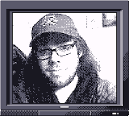

Matthew Trucks
----A computer science student from Alabama, Matthew was introduced to computers at a very young age. With a love for technology and video games, he's always wanted to create worlds that will make people feel the same way he felt playing them. He also plays the ukulele!----